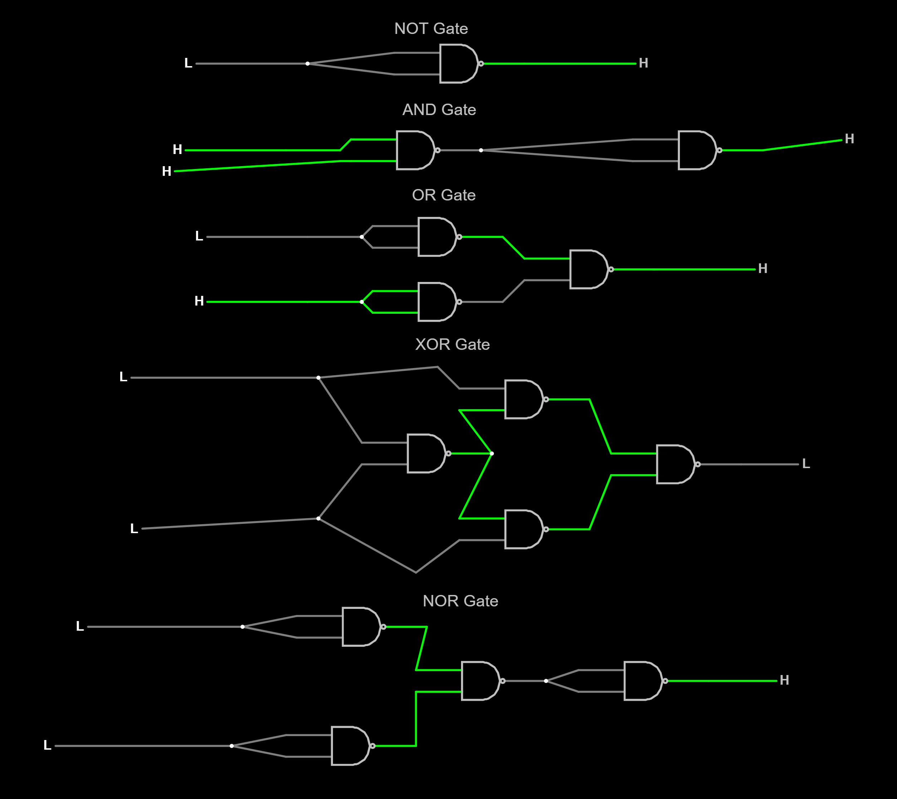

Name: Tanay Sreedharan
Journal: J1016
Date: 14-Sep-2022
I recieved assistance from: No one
I assisted: Aryan Verma
Logic Gates Images
What did I learn?
I learned about the various different logic gates. I also developed many skills on how to use these logic gates, and how to even create many of these logic gates using my own tools.What challenges did I encounter?
I sometimes found it difficult to create the logic gates. It took me multiple attempts to figure out how to correctly make the XOR gate. It also took me a long time to figure out how to upload a picture to tabby as it was my first time.
How could this experience be improved?
It was a really good lesson, and I do not know what could be improved.